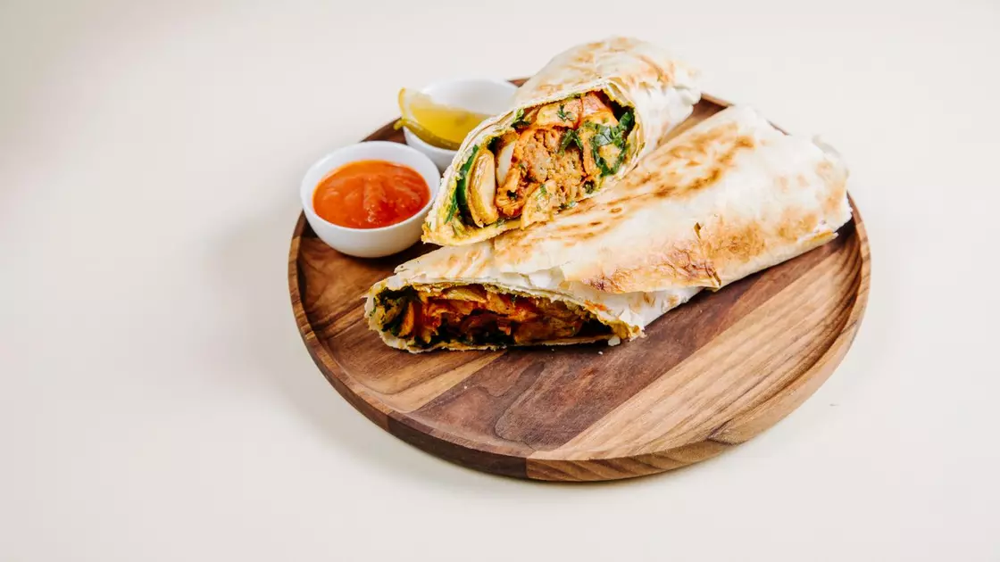
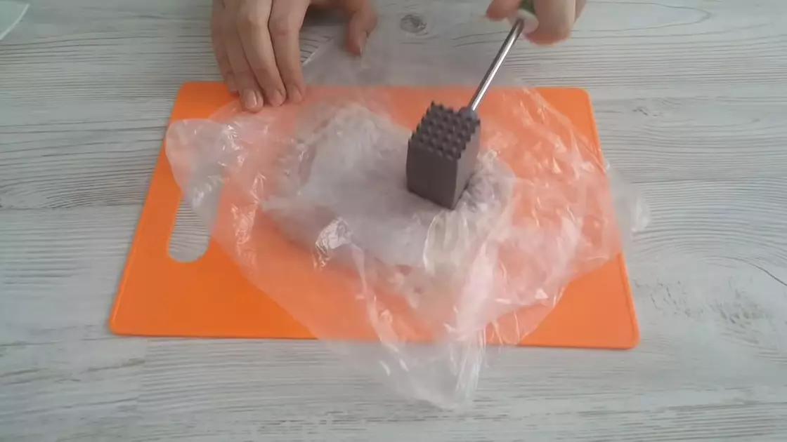
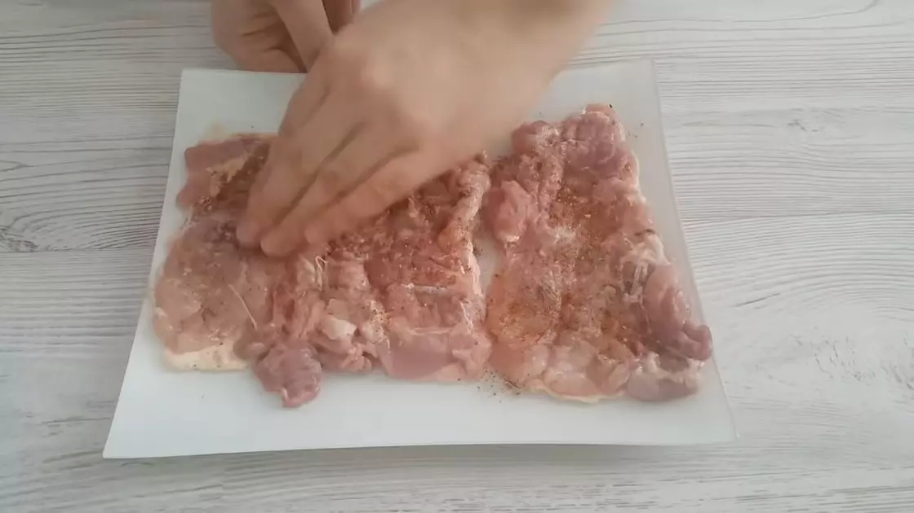
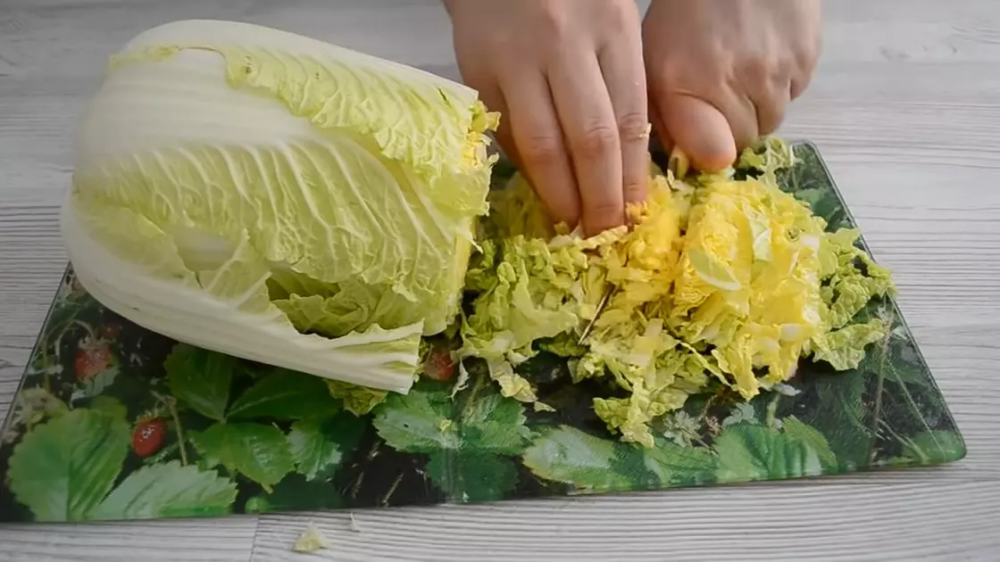
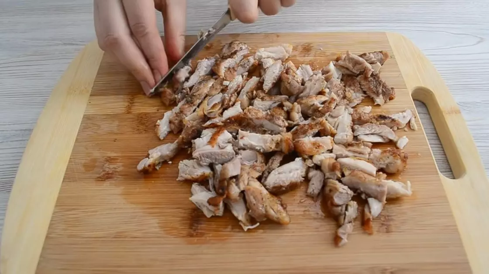
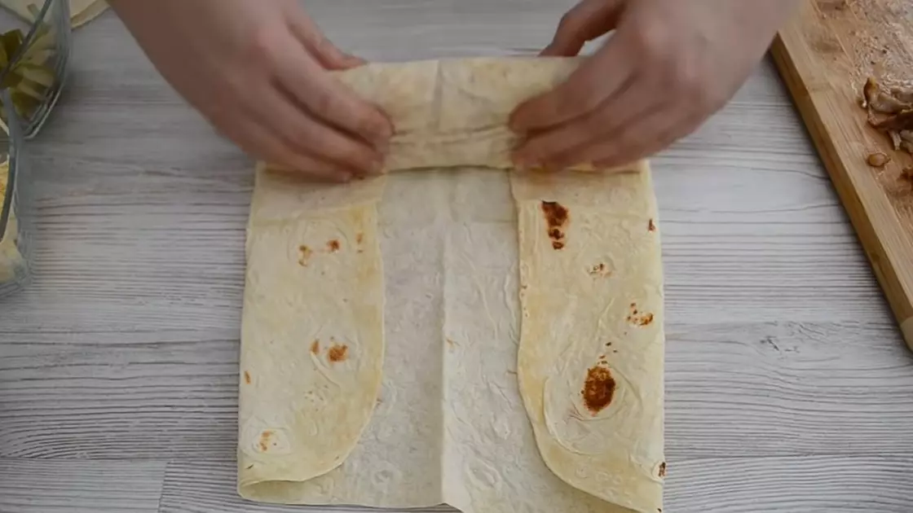
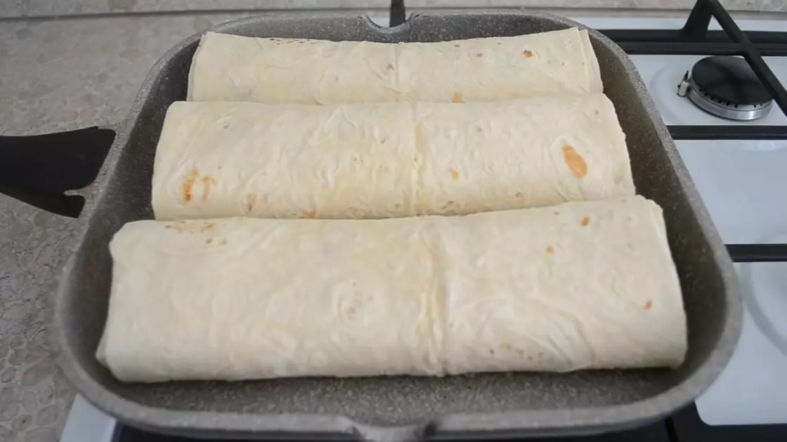

Кулинария
Человеческая деятельность по приготовлению пищи. Включает в
себя комплекс технологий, оборудования и рецептов.
Кулинария - это совокупность способов приготовления из
минералов и продуктов растительного и животного
происхождения самой различной пищи, необходимой для жизни
и здоровья человека.
Рецепт Домашней шаурмы
Приготовьте вкусную и полезную домашнюю шаурму.
Для нее понадобятся куриные бедра, свежие овощи и
лаваш. Следуйте подсказкам и сделаете любимый фастфуд потрясающе вкусным.
Популярный фастфуд появился в Дамаске более тысячи лет назад. Название блюда происходит от
турецкого слова «cevirme», что буквально переводится как ‘вращение’.
На название повлиял способ приготовления мяса, которое используют для
шаурмы: традиционно его нанизывают пластами и обжаривают на
специальном вращающемся вертеле. Не существует единого рецепта блюда,
поскольку в начинку можно положить самые различные ингредиенты.
Неизменным остается сочетание мяса, овощей и соуса, которые
заворачивают в лаваш.
ПРИГОТОВЛЕНИЕ 1. Подготовьте мясо
Куриные бедра промойте и обсушите бумажным полотенцем.
Очистите мясо от кожицы, отделите филе от кости. Отбейте филе
молоточком для мяса. Чтобы волокна мяса не рвались, накройте мясо
пищевой пленкой.
2. Добавьте специи
Посолите и поперчите мясо по вкусу. Для аромата и чтобы подчеркнуть
нежный вкус мяса, используйте специи. Можно приобрести готовую
приправу, а можно смешать по щепотке куркумы, карри, розмарина,
сушеного чеснока и паприки. Оставьте курицу на несколько минут,
чтобы мясо впитало специи.
3. Подготовьте ингредиенты
После измельчения каждый ингредиент кладите на вспомогательную тарелку.
Помойте помидор, нарежьте кубиком. Соленые огурцы сначала порежьте
пластинками, а затем измельчите соломкой. Пекинскую капусту мелко
нашинкуйте ножом. Сыр натрите на крупной терке. Традиционный набор
ингредиентов для шаурмы — мясо, овощи, соус. Используйте для
приготовления шаурмы курятину, говядину или свинину. Дополните мясо
овощами на выбор: белокочанной капустой, свежим или маринованным
огурцом, морковью по-корейски, помидорами, болгарским перцем,
грибами. Гармонично дополняет вкус шаурмы сыр. Приготовьте блюдо
с адыгейским сыром, тофу, фета или тертым твердым сыром.
4. Приготовьте соус

Чеснок очистите и пропустите через пресс.
Добавьте майонез и сметану.
Перемешайте ингредиенты до получения однородной массы.
5. Обжарьте курицу
Разогрейте сковороду с подсолнечным маслом. Выложите отбитое мясо
и обжарьте с двух сторон до золотистой корочки.
Готовое мясо нарежьте тонкими ломтиками.
6. Сформируйте шаурму
Разверните лист лаваша. На край, на который будете выкладывать начинку,
положите 1 ст. л. чесночного соуса и 1 ч. л. кетчупа.
Смажьте соусом лаваш. Выложите третью часть курицы и по трети
каждого вида овощей и сыр. Подверните боковые края так, чтобы они
накрывали начинку по бокам, а затем скрутите лаваш с начинкой в
плотный рулет. Повторите это действие с оставшимися двумя лавашами.
7. Обжарьте шаурму
Разогрейте сухую сковороду. Выложите на нее сформированную шаурму.
Поджарьте на медленном огне до золотистой корочки с двух сторон,
чтобы лаваш стал хрустящим.